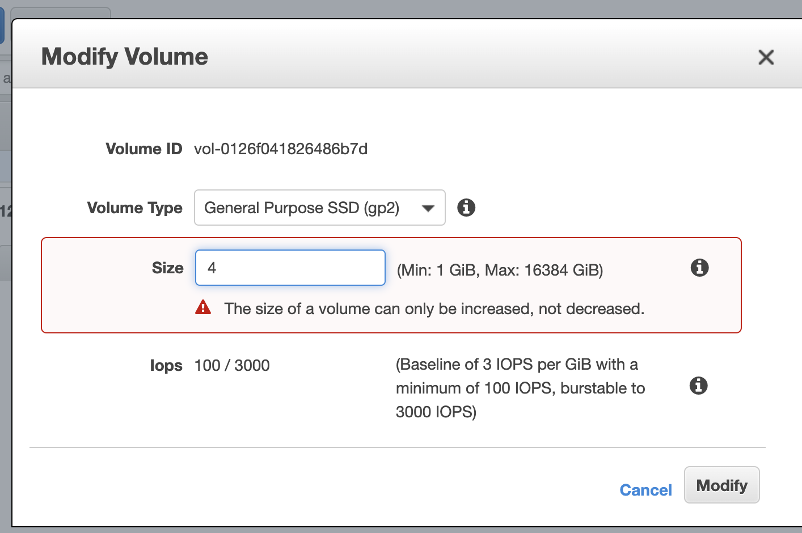

The current note and all other notes titled “AWS SAA Test prep” are based on the 10-hour free tutorial hosted by Andrew Brown and published by freeCodeCamp, which is accessible on YouTube through this link. Special thanks for the maker and publisher of the awesome video!
Highly available and durable solution for attaching persistent block storage volumes to an EC2 instance.
Volumes are automatically replicated within their AZ to protect from component failure.
Types
See a clear form for EBS types here
There are four types of EBS in the current generation.
General Purpose (SSD) (gp2)
Balances price and performance.
Use Cases: most workloads, general usage without specific requirements. Boot volumes, low-latency interactive apps, dev & test.
Volume Size: 1GB-16TB
Max IOPS per Volume: 16,000
max throughput per volume: 250MB/s
Dominant Performance Attribute: IOPS
Provisioned IOPS SSD (SSD) (io1)
Highest SSD performance for Mission-critical low latency or high throughput.
Use Cases: I/O-intensive NoSQL and relational databases
Volume Size: 4GB - 16TB
Max IOPS per Volume: 64,000
max throughput per volume: 1000MB/s
Dominant Performance Attribute: IOPS
Throughput Optimized HDD(st1)
Low-cost. Designed for frequently accessed, throughput intensive workloads.
Use Cases: Data Warehouses, Big Data, Log Processing
Volume Size: 500GB-16TB
Max IOPS per Volume: 500
max throughput per volume: 500MB/s
Dominant Performance Attribute: MB/s
Cold HDD (sc1)
Lowest cost HDD volume designed for less frequently accessed workloads.
Use cases: Colder data requiring fewer scans per day
Volume Size: 500GB-16TB
Max IOPS per Volume: 250
max throughput per volume: 250MB/s
Dominant Performance Attribute: MB/s
Storage Volumes
Hard Disk Drive (HDD)
magnetic storage, uses rotating platters. an actuator arm and a magnetic head.
Very good at writing a continuous amount of data.
not great for many small reads and write (think of the arm having to lift up and down and move around)
- Better for Throughput
- Physical moving part
Solid State Drive (SSD)
Uses integrated circuit assemblies as memory to store data persistently. Typically using flash memory.
Typically more resistant to physical shock, run quietly, have quicker access time and low latency. - Very good for frequent, small reads and writes (IOPS, Input/Output Operations Per Second)
- No physical moving parts.
Magnetic Tape
highly durable, cheap to reduce.
A large reel of magnetic tape.
A tape driver is used to write data to the tape.
Medium and large-sized data centres deplyed with both tape and disk formats.
They normally come in the form of cassettes. - Durable for decades
- Cheap to produce
Moving Volumes
An EBS volume belongs to one AZ. It is automatically duplicated within the AZ. When you create a volume from a snapshot, you can select which AZ you want to create the volume.
Volumes always exist in the same AZ as the EC2 instance.
An EBS snapshot belongs to one Region. When you copy a snapshot, you can select which region you want to copy it to. Snapshot exist on S3
One AZ->another AZ
- take a Snapshot of the volume
- create an AMI from the Snapshot
- launch new EC2 instance in desired AZ
Or: Create Volume from the snapshot in desired AZ
One Region -> another
- Take a Snapshot
- create an AMI from the snapshot
- copy the AMI to another region
- launch a new EC2 instance from the copied AMI
Or: When copying a snapshot, select a new Region.
Encrypted Root Volumes
If you want to encrypt an existing volume:
- Take a snapshot
- make a copy of that snapshot, and select encryption
- create a new AMI from the encrypted snapshot
- launch a new EC2 instance from the created AMI.
Instance Store Volumes (Ephemeral)
Located on disks that are physically attached to a host machine.
An instance Store Volume is created from a template stored in S3.
The data in an instance store persists only during the lifetime of its associated instance. If an instance reboots (intentionally or unintentionally), data in the instance store persists. However, data in the instance store is lost under any of the following circumstances:
- The underlying disk drive fails
- The instance stops
- The instance terminates
When you stop or terminate an instance, every block of storage in the instance store is reset.
Ideal for:
- temporary backup
- storing an application’s cache, logs, or other random data.
Modify EBS volume on the fly
You can increase the size/change the type of EBS while it is running.
